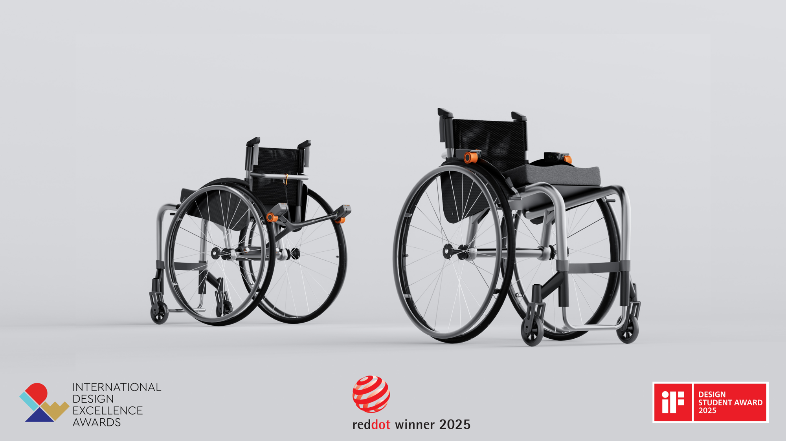
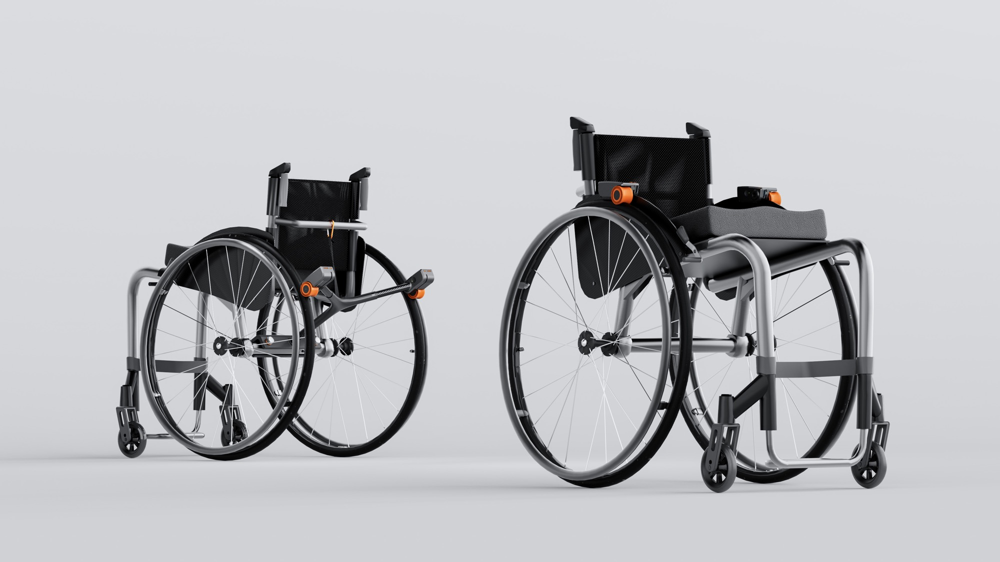
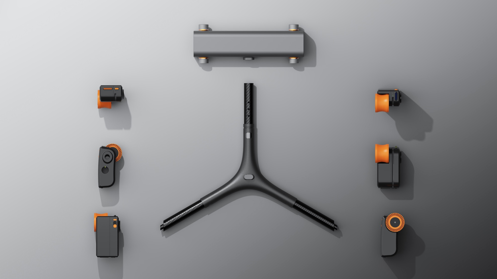
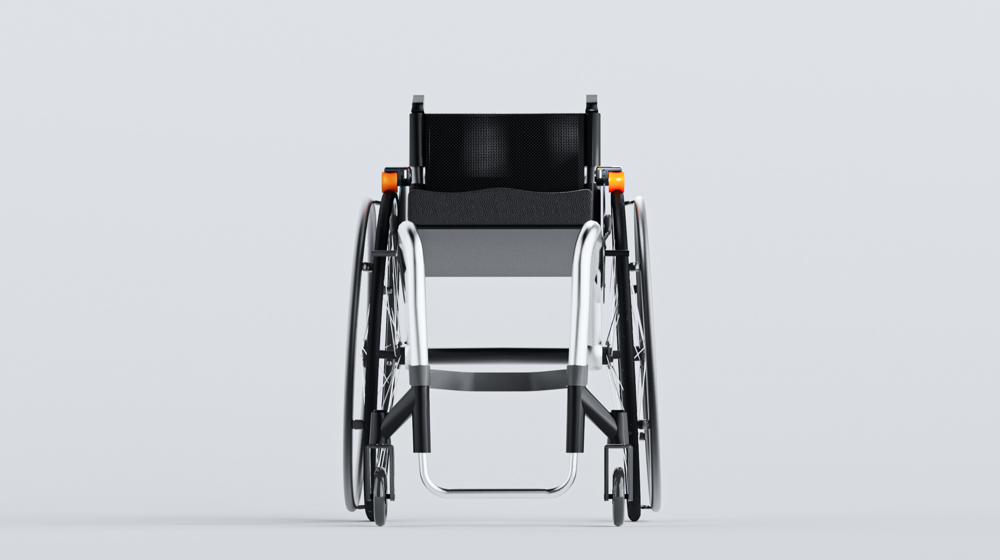
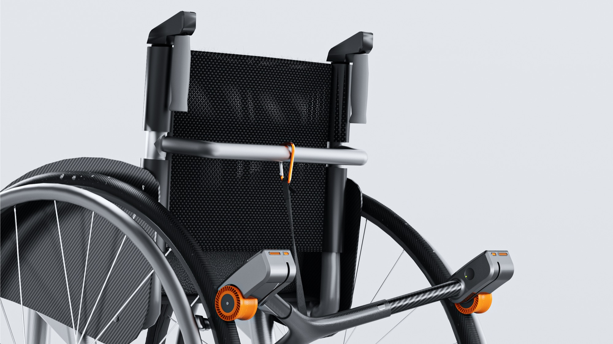
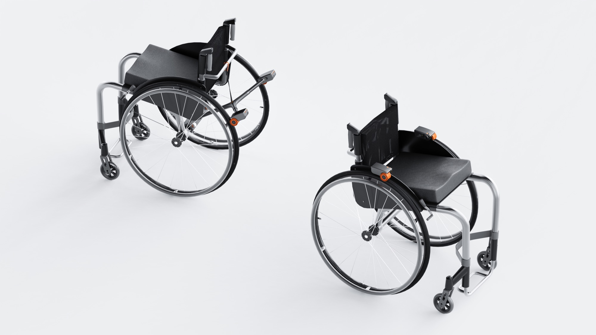

ElectroGlide
A motorized, detachable power-assist attachment for manual wheelchairs — there when you need it, gone when you don't.

About
Meet ElectroGlide, a motorized, electric attachment for wheelchairs that can provide dynamic auxiliary force according to user input.
It helps the user power through times of injury, sickness, and other conditions that may affect their ability to push.
Use it as a helping hand — there for you when you need it, and easy to remove when you don't.
“ElectroGlide is a smart, motorized wheelchair attachment that supports young users through fatigue or injury while preserving their free choice of manual control. Lightweight and adaptable, it empowers independence and redefines assistive mobility as flexible and discreet. This beautifully illustrates the principle that great design is as much about adaptation as invention. Well done!”
— iF Design Student Award 2025 · Jury Statement
Functions
Two Modes of Use
A Frame-Integrated Mode and a Modular Independent Mode — enabling seamless adaptation to different mobility needs and environments.
Modular Independent Mode
Both modules can be removed from the support frame and mounted over the wheel area — offering lightweight, side-mounted assistance without requiring the full linkage system.
Frame-Integrated Mode
Designed to fit standard wheelchair axles, the integrated frame provides a universal, stable platform for coordinated assistance.
Three-Tube Linkage Frame
The three-tube linkage frame creates a rigid, universal connection to standard wheelchair axles — ensuring stable mounting and balanced power delivery across different wheelchair setups.
Awards
ElectroGlide was awarded in the iF Design Student Award 2025 — selected among the top 100 projects from over 7,000 global entries, one of the most competitive and prestigious student design recognitions in the world.





ElectroGlide is a lightweight, detachable power-assist tool designed for manual wheelchair users.
With a compact Y-frame structure, modular motor units, and an intuitive clip-on interface, it reduces upper-body strain while preserving the flexibility and independence of manual operation — supporting smoother rides across diverse urban terrains without sacrificing aesthetics or usability.